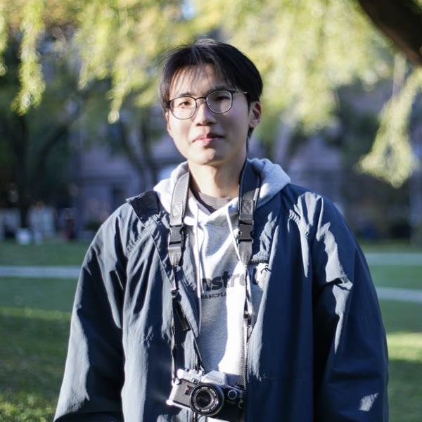

ICLR


Undergraduate Student · Tsinghua University
yuyue23 [at] mails.tsinghua.edu.cn
I am currently a senior undergraduate (from 2023 Fall) in IIIS (Yao Class), Tsinghua University, pursuing a Bachelor’s degree in Computer Science.
Currently, I am a research assistant at New York University, advised by Prof. Saining Xie. I have also been working on robot learning with Prof. Huazhe Xu at Tsinghua.
My research focuses on multimodal models that understand and reason over video:
B.S. in Computer Science, Tsinghua University · 2023 – 2027 (expected)
Institute for Interdisciplinary Information Sciences (Yao Class)
GPA: 4.0 / 4.0, Rank: 1 / 91

I am an amateur naturalist — I like spending time outdoors with birds and plants.